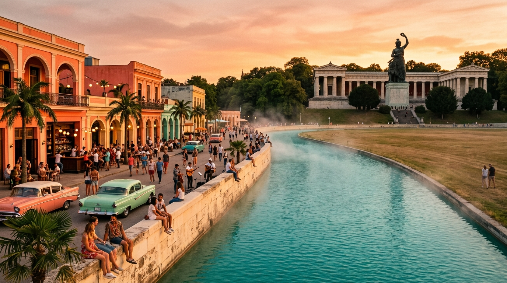

El Malecón
golden hour · Munich gets a sea
A turquoise channel cuts across the Wiese. People sit on the seawall, music spills from coral bars, vintage Chevrolets at the edges. The Bavaria statue is the sunset horizon.